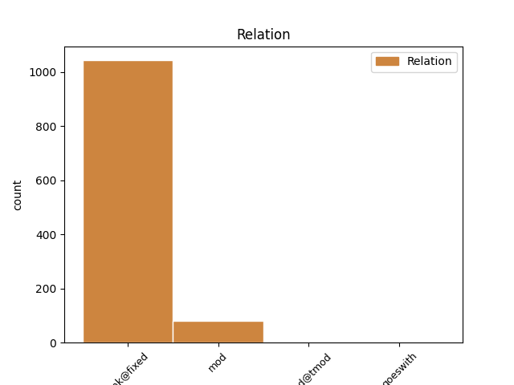

Distribution of features within this leaf

Agreement Rules sorted by frequency.
- When the dependent token is the unk@fixed(unk@fixed) of the head token, and the head token is ADP and the dependent token is ADP.
1 Ducîndu _ _ _ _ 0 _ _ _
2 -l _ _ _ _ 0 _ _ _
3 , _ _ _ _ 0 _ _ _
4 ori _ _ _ _ 0 _ _ _
5 la _ _ _ _ 0 _ _ _
6 moșia _ _ _ _ 0 _ _ _
7 lui _ _ _ _ 0 _ _ _
8 , _ _ _ _ 0 _ _ _
9 sau _ _ _ _ 0 _ _ _
10 aiurea _ _ _ _ 0 _ _ _
11 unde _ _ _ _ 0 _ _ _
12 are _ _ _ _ 0 _ _ _
13 trebuință _ _ _ _ 0 _ _ _
14 , _ _ _ _ 0 _ _ _
15 pînă până ADP Spca AdpType=Prep|Case=Acc|Compound=Yes 0 _ _ _
16 la la ADP Spsa AdpType=Prep|Case=Acc 15 unk@fixed _ ref=COMPLETARE.6
17 un _ _ _ _ 0 _ _ _
18 loc _ _ _ _ 0 _ _ _
19 cale _ _ _ _ 0 _ _ _
20 de _ _ _ _ 0 _ _ _
21 șase _ _ _ _ 0 _ _ _
22 ceasuri _ _ _ _ 0 _ _ _
23 , _ _ _ _ 0 _ _ _
24 iar _ _ _ _ 0 _ _ _
25 cînd _ _ _ _ 0 _ _ _
26 va _ _ _ _ 0 _ _ _
27 fi _ _ _ _ 0 _ _ _
28 locul _ _ _ _ 0 _ _ _
29 unde _ _ _ _ 0 _ _ _
30 ceare _ _ _ _ 0 _ _ _
31 stăpînul _ _ _ _ 0 _ _ _
32 mai _ _ _ _ 0 _ _ _
33 depărtat _ _ _ _ 0 _ _ _
34 decît _ _ _ _ 0 _ _ _
35 cale _ _ _ _ 0 _ _ _
36 de _ _ _ _ 0 _ _ _
37 șase _ _ _ _ 0 _ _ _
38 ceasuri _ _ _ _ 0 _ _ _
39 , _ _ _ _ 0 _ _ _
40 sau _ _ _ _ 0 _ _ _
41 nu _ _ _ _ 0 _ _ _
42 va _ _ _ _ 0 _ _ _
43 avea _ _ _ _ 0 _ _ _
44 stăpînul _ _ _ _ 0 _ _ _
45 trebuință _ _ _ _ 0 _ _ _
46 de _ _ _ _ 0 _ _ _
47 leamne _ _ _ _ 0 _ _ _
48 , _ _ _ _ 0 _ _ _
49 atunci _ _ _ _ 0 _ _ _
50 să _ _ _ _ 0 _ _ _
51 plătească _ _ _ _ 0 _ _ _
52 clăcașul _ _ _ _ 0 _ _ _
53 cu _ _ _ _ 0 _ _ _
54 bani _ _ _ _ 0 _ _ _
55 , _ _ _ _ 0 _ _ _
56 carul _ _ _ _ 0 _ _ _
57 po _ _ _ _ 0 _ _ _
58 talere _ _ _ _ 0 _ _ _
59 trei _ _ _ _ 0 _ _ _
60 . _ _ _ _ 0 _ _ _
1 Apellație _ _ _ _ 0 _ _ _
2 să _ _ _ _ 0 _ _ _
3 cheamă _ _ _ _ 0 _ _ _
4 jalba _ _ _ _ 0 _ _ _
5 ce _ _ _ _ 0 _ _ _
6 să _ _ _ _ 0 _ _ _
7 dă _ _ _ _ 0 _ _ _
8 de _ _ _ _ 0 _ _ _
9 cătră _ _ _ _ 0 _ _ _
10 cei _ _ _ _ 0 _ _ _
11 ce _ _ _ _ 0 _ _ _
12 să _ _ _ _ 0 _ _ _
13 judecă _ _ _ _ 0 _ _ _
14 cu _ _ _ _ 0 _ _ _
15 cerere _ _ _ _ 0 _ _ _
16 de _ _ _ _ 0 _ _ _
17 a _ _ _ _ 0 _ _ _
18 să _ _ _ _ 0 _ _ _
19 cerceta _ _ _ _ 0 _ _ _
20 hotărîrea _ _ _ _ 0 _ _ _
21 unii _ _ _ _ 0 _ _ _
22 judecăți _ _ _ _ 0 _ _ _
23 mai _ _ _ _ 0 _ _ _
24 de _ _ _ _ 0 _ _ _
25 jos _ _ _ _ 0 _ _ _
26 , _ _ _ _ 0 _ _ _
27 de de ADP Spsa AdpType=Prep|Case=Acc 0 _ _ _
28 altă _ _ _ _ 0 _ _ _
29 judecată _ _ _ _ 0 _ _ _
30 mai _ _ _ _ 0 _ _ _
31 de de ADP Spsa AdpType=Prep|Case=Acc 27 mod _ ref=PART_V_CAP_4.1
32 sus _ _ _ _ 0 _ _ _
33 . _ _ _ _ 0 _ _ _
1 Udă _ _ _ _ 0 _ _ _
2 -mă _ _ _ _ 0 _ _ _
3 , _ _ _ _ 0 _ _ _
4 mamă _ _ _ _ 0 _ _ _
5 , _ _ _ _ 0 _ _ _
6 cu _ _ _ _ 0 _ _ _
7 apă _ _ _ _ 0 _ _ _
8 , _ _ _ _ 0 _ _ _
9 Că _ _ _ _ 0 _ _ _
10 de _ _ _ _ 0 _ _ _
11 -acuma _ _ _ _ 0 _ _ _
12 eu _ _ _ _ 0 _ _ _
13 plec _ _ _ _ 0 _ _ _
14 la _ _ _ _ 0 _ _ _
15 groapă _ _ _ _ 0 _ _ _
16 , _ _ _ _ 0 _ _ _
17 Udă _ _ _ _ 0 _ _ _
18 -mă _ _ _ _ 0 _ _ _
19 , _ _ _ _ 0 _ _ _
20 mamă _ _ _ _ 0 _ _ _
21 , _ _ _ _ 0 _ _ _
22 cu _ _ _ _ 0 _ _ _
23 vin _ _ _ _ 0 _ _ _
24 , _ _ _ _ 0 _ _ _
25 Că _ _ _ _ 0 _ _ _
26 de _ _ _ _ 0 _ _ _
27 -acum _ _ _ _ 0 _ _ _
28 eu _ _ _ _ 0 _ _ _
29 nu _ _ _ _ 0 _ _ _
30 mai _ _ _ _ 0 _ _ _
31 vin _ _ _ _ 0 _ _ _
32 , _ _ _ _ 0 _ _ _
33 Udă _ _ _ _ 0 _ _ _
34 -mă _ _ _ _ 0 _ _ _
35 , _ _ _ _ 0 _ _ _
36 mamă _ _ _ _ 0 _ _ _
37 , _ _ _ _ 0 _ _ _
38 cu _ _ _ _ 0 _ _ _
39 miere _ _ _ _ 0 _ _ _
40 , _ _ _ _ 0 _ _ _
41 Că _ _ _ _ 0 _ _ _
42 de de ADP Spsa AdpType=Prep|Case=Acc 44 mod@tmod _ SpaceAfter=No
43 -acum _ _ _ _ 0 _ _ _
44 la la ADP Spsa AdpType=Prep|Case=Acc 0 _ _ _
45 revedere _ _ _ _ 0 _ _ _
46 , _ _ _ _ 0 _ _ _
47 Să _ _ _ _ 0 _ _ _
48 nu _ _ _ _ 0 _ _ _
49 mă _ _ _ _ 0 _ _ _
50 -ngropați _ _ _ _ 0 _ _ _
51 adânc _ _ _ _ 0 _ _ _
52 , _ _ _ _ 0 _ _ _
53 S- _ _ _ _ 0 _ _ _
54 aud _ _ _ _ 0 _ _ _
55 fetele _ _ _ _ 0 _ _ _
56 cântând _ _ _ _ 0 _ _ _
57 Și _ _ _ _ 0 _ _ _
58 băeții _ _ _ _ 0 _ _ _
59 șuerând _ _ _ _ 0 _ _ _
60 . _ _ _ _ 0 _ _ _
1 Deci _ _ _ _ 0 _ _ _
2 cele _ _ _ _ 0 _ _ _
3 legiuite _ _ _ _ 0 _ _ _
4 pentru _ _ _ _ 0 _ _ _
5 vînzare _ _ _ _ 0 _ _ _
6 și _ _ _ _ 0 _ _ _
7 cumpărare _ _ _ _ 0 _ _ _
8 ( _ _ _ _ 0 _ _ _
9 de _ _ _ _ 0 _ _ _
10 la _ _ _ _ 0 _ _ _
11 15 _ _ _ _ 0 _ _ _
12 , _ _ _ _ 0 _ _ _
13 și _ _ _ _ 0 _ _ _
14 pînă până ADP Spca AdpType=Prep|Case=Acc|Compound=Yes 0 _ _ _
15 la la ADP Spsa AdpType=Prep|Case=Acc 14 goeswith _ ref=PART_III_CAP_3.3
16 29 _ _ _ _ 0 _ _ _
17 și _ _ _ _ 0 _ _ _
18 de _ _ _ _ 0 _ _ _
19 la _ _ _ _ 0 _ _ _
20 35 _ _ _ _ 0 _ _ _
21 , _ _ _ _ 0 _ _ _
22 și _ _ _ _ 0 _ _ _
23 pînă _ _ _ _ 0 _ _ _
24 la _ _ _ _ 0 _ _ _
25 46 _ _ _ _ 0 _ _ _
26 ) _ _ _ _ 0 _ _ _
27 să _ _ _ _ 0 _ _ _
28 alcătuesc _ _ _ _ 0 _ _ _
29 deopotrivă _ _ _ _ 0 _ _ _
30 , _ _ _ _ 0 _ _ _
31 și _ _ _ _ 0 _ _ _
32 la _ _ _ _ 0 _ _ _
33 schimburi _ _ _ _ 0 _ _ _
34 . _ _ _ _ 0 _ _ _
Disagree Examples:
1 Trece _ _ _ _ 0 _ _ _
2 un _ _ _ _ 0 _ _ _
3 cârd _ _ _ _ 0 _ _ _
4 de _ _ _ _ 0 _ _ _
5 rândunele _ _ _ _ 0 _ _ _
6 Pe pe ADP Spsa AdpType=Prep|Case=Acc 0 _ _ _
7 deasupra deasupra ADP Spcg AdpType=Prep|Case=Gen|Compound=Yes 6 unk@fixed _ _
8 casei _ _ _ _ 0 _ _ _
9 mele _ _ _ _ 0 _ _ _
10 . _ _ _ _ 0 _ _ _